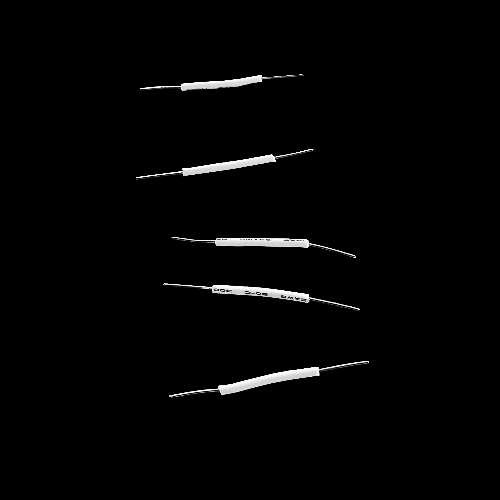
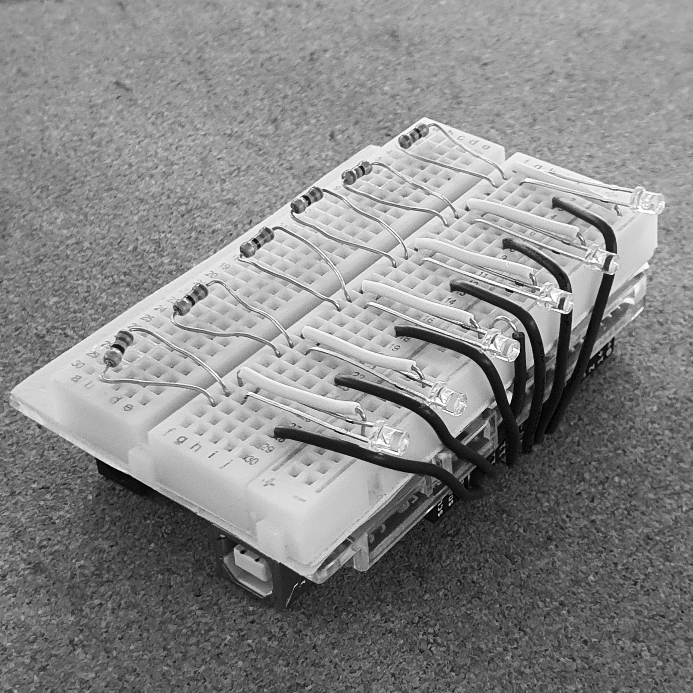
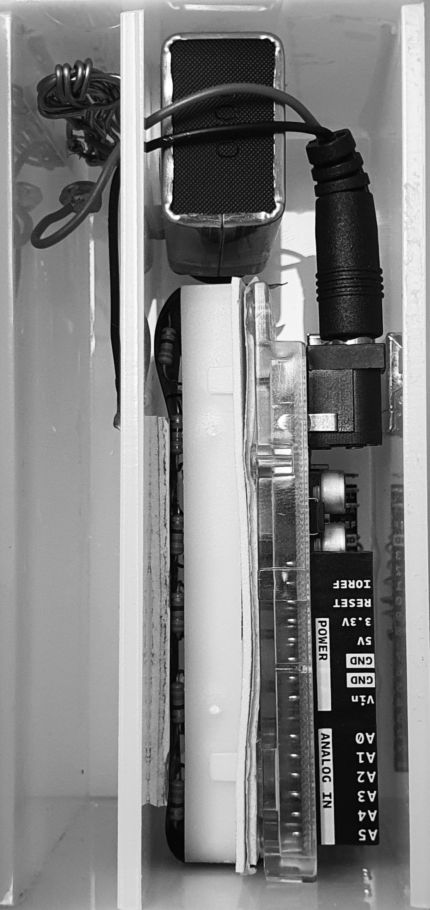

중력에 의해 배터리가 접촉되어 특정 방향에서만 전원이 공급된다.



최소한의 길이로 절단한 전선 (왼쪽 위)
조립 완료된 내부 부품 (왼쪽 아래)
아크릴 케이스에 내부부품을 삽입한 모습(오른쪽)
결론
작업할 때 짧은 마감시간을 정해 놓으면 긴급성을 느끼고 집중력이 향상되어 작업 효율이 증가하게 됩니다. SiliconTimer는 기존에 사용되어 온 모래시계와 완전히 같은 조작 방식을 가졌기 때문에 타이머를 설정하는 시간조차 아낄 수 있습니다. 또한 타이머가 종료되었을 때 어떤 타이머보다 조용하고 눈에 띄게 알리게 되어 쾌적한 작업환경을 구성할 수 있습니다.